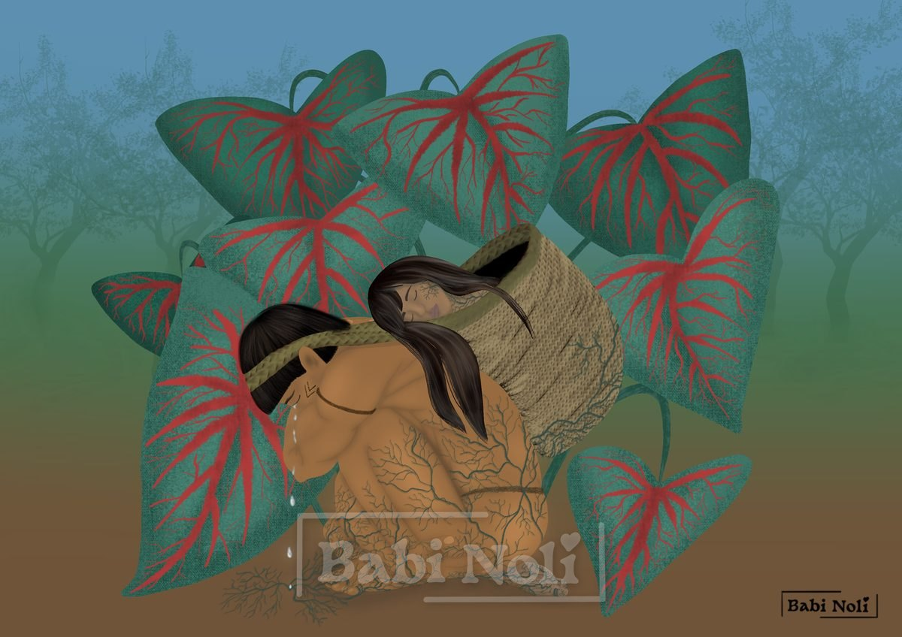

The Tambá-tajá

The tambá-tajá is a plant grown in the Amazon. Its leaves are triangular, with three points, resembling a heart. It also has a pair of leaves: a large one, attached to a smaller one at the back. It is known for bringing luck to those who grow it or simply keep it at home.
The legend of the Macuxi people says that the tambá-tajá was born from the love between two young Indigenous people. This young couple, newly married, lived happily and in love until the young woman became very ill, which left her legs paralyzed.
The young warrior loved her more than anything and knew she was going through a very hard time. He only wanted to be by her side, but he had to go out to bring food home. He didn’t want to leave her alone and, after many sleepless nights worrying about it, he had a great idea.
He wove a large straw basket with a sling-like strap to carry his sick, paralyzed beloved wherever he went. The two went everywhere together: they talked, laughed, sang and told stories. But as time went by, the young woman’s health grew worse. The laughter gave way to long periods of silence. He cared for her with so much love that everyone who knew them knew she was the reason for his life.
One day, as he walked carrying her in the basket as usual, he noticed that the silence was deeper than usual and that the weight felt different too. He called her, but there was no answer. He stopped on the bank of an igarapé, a small forest stream, took the basket down and set it on the ground. He called her again and gently touched her face and her hair, but she did not move. Then he realized that she was already gone.
At that moment, a deep sadness came over him. Stroking her hair, he promised that they would never be separated, that not even death would manage to part them.
He began to dig a deep hole; he dug with such force, as if it could bring her back. In the end, exhausted, he carried her in his arms and lay down in the hole, holding her. His tears moistened the earth beneath their bodies. Then he fell asleep beside her.
Suddenly, roots began to grow where his tears had fallen. They grew slowly, wrapping the two of them completely. After nine moons, the young couple had disappeared and, in their place, stood a majestic dark-green plant with large heart-shaped leaves and red grooves, branching out like the veins of the human body. The large leaves carried a small leaf on their backs, symbolizing the young man who had carried his beloved on his back for so many years.
Today, the tambá-tajá is grown as a symbol of true and lasting love.
Translated from Portuguese with AI. The original text is mine.
Did you know?
In the Amazon, the tambá-tajá is kept at home as an amulet for love and protection. According to popular belief, the small leaf on the back of the large one shows that there is love in that home.
So which plant is the tambá-tajá? Sources don’t agree, and there are two candidates, both from the arum family (Araceae):
- A form of taioba that was once described as Xanthosoma atrovirens var. appendiculatum. The name appendiculatum refers to an appendage on the leaf, which recalls the little leaf on the back of the large one. Today botanists treat this name as a synonym of common taioba (Xanthosoma sagittifolium), a plant with large heart-shaped leaves.
- Caladium (Caladium bicolor), native to the Amazon and also called tajá or coração-de-jesus. Its heart-shaped leaves can come in shades of green, white, pink and red. Caladium is toxic if eaten: it is an ornamental plant, not a food.
The Macuxi people live in the Mount Roraima region, between Brazil, Venezuela and Guyana. Their language belongs to the Cariban family, and in Brazil they number about 33,000 people, living mainly in the grasslands and hills of northern Roraima.